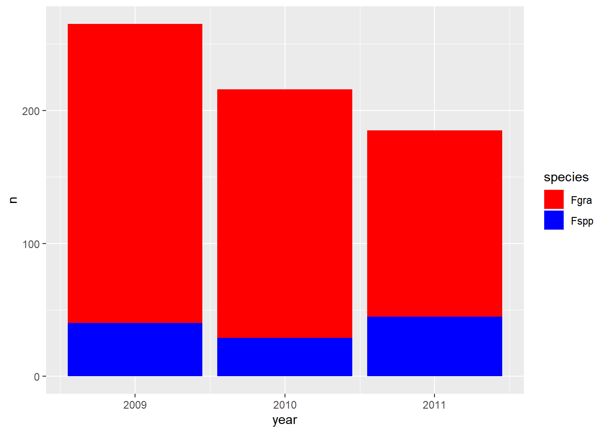
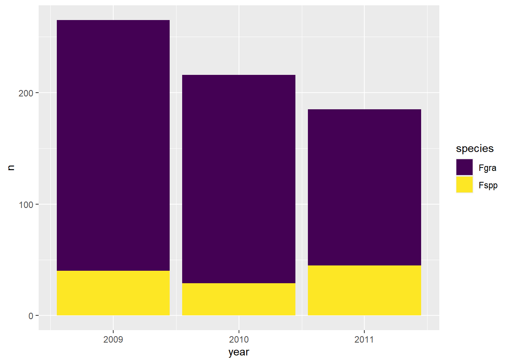

importando_dados
Importando Dados
Importar um conjunto de dados que está disponível no R
O R possui diversos conjuntos de dados incorporados que podem ser utilizados para fins de prática, ensino e demonstração de análises estatísticas.
Exemplo para o pacote Orange.
Orange é um dataset interno do R que contém informações sobre o crescimento de árvores de laranja ao longo do tempo.
Ao conjunto de dados chamado Orange está atribuindo um novo objeto chamado dados. O operador <- está dizendo: “pegue os dados de Orange e salve em um objeto chamado dados”.
Tree age circumference
1 1 118 30
2 1 484 58
3 1 664 87
4 1 1004 115
5 1 1231 120
6 1 1372 142
7 1 1582 145
8 2 118 33
9 2 484 69
10 2 664 111
11 2 1004 156
12 2 1231 172
13 2 1372 203
14 2 1582 203
15 3 118 30
16 3 484 51
17 3 664 75
18 3 1004 108
19 3 1231 115
20 3 1372 139
21 3 1582 140
22 4 118 32
23 4 484 62
24 4 664 112
25 4 1004 167
26 4 1231 179
27 4 1372 209
28 4 1582 214
29 5 118 30
30 5 484 49
31 5 664 81
32 5 1004 125
33 5 1231 142
34 5 1372 174
35 5 1582 177Para salvar o conjunto de dados Orange em formato de planilha Excel (.xlsx) no R, você pode usar o pacote writexl.
Dados em formato Excel
O pacote readxl é usado para a importação de planilhas do excel, e permite gerar dataframe de planilhas excel, sendo necessário ser carregado sempre antes de usar. A maioria das funções do readxl permite ler dados de planilhas excel, a exemplo de read_excel.
O primeiro argumento para read_excel é o caminho do arquivo que deve ser lido. O caminho do arquivo e o nome do arquivo (incluindo a extensão do arquivo, .xlsx) precisam ser colocados entre aspas duplas.
Code
library(dplyr)
library(tidyverse)
library(readxl)
dados2 <- read_excel("dados.xlsx",
sheet = "sensibilidade_fungicidas")
#O argumento sheet = "sensibilidade_fungicidas" indica que você está lendo especificamente a aba (planilha) com esse nome dentro do arquivo Excel.
#Ou dessa forma:
#Pelo nome da aba → "nome_da_aba".
dados2<- read_excel("dados.xlsx", "sensibilidade_fungicidas")
#Pela posição da aba → 1, 2, 3, etc.
dados2 <- read_excel("dados.xlsx", 2)
dados2 <- dados2 |>
mutate(dose = as.numeric(dose)) #O código transforma a coluna dose do objeto dados2 em formato numérico e salva essa versão modificada de volta no próprio dados2.
#Isso porque na tabela a coluna dose não está como número.Dados em planilha google
Para importar dados de planilhas google, usa-se a função gsheet (read_sheet), presente no pacote gsheet. A função read_gsheet lê o arquivo a partir de uma URL (link da planilha desejada).
Usando o argumento text
Uma forma de carregar rapidamente dados no ambiente é por meio do argumento text. Você pode copiar (ctrl + c) os dados de uma planilha e colar (ctrl + v) entre aspas (““), após o argumento text da função read.table.
Exemplo: dados <- read.table(h=T, text=” “)
Para salvar do R para arquivo Excel ou csv
Para verificar o conjunto de dados
Para verificar se os dados estão corretos, pode-se utilizar a função str ou glimpse.
A função str() em R é usada para resumir a estrutura de um objeto. Ela mostra rapidamente o tipo, tamanho e os componentes de objetos como data frames, listas ou vetores. É muito útil na exploração inicial dos dados.
A função glimpse mostra do pacote dplyr, permite uma visão geral compacta do conjunto de dados. Ela exibe:
O número de linhas e colunas;
O tipo de dado de cada variável (por exemplo, numérico, caracterer);
Os primeiros valores presentes em cada coluna;
tibble [240 × 9] (S3: tbl_df/tbl/data.frame)
$ code : chr [1:240] "FGT05" "FGT05" "FGT05" "FGT05" ...
$ year : num [1:240] 2007 2007 2007 2007 2007 ...
$ trial : num [1:240] 1 1 1 1 1 1 1 1 1 1 ...
$ state : chr [1:240] "RS" "RS" "RS" "RS" ...
$ dose : num [1:240] 0 0 0.05 0.05 0.5 0.5 1 1 5 5 ...
$ replicate : num [1:240] 1 2 1 2 1 2 1 2 1 2 ...
$ germination: num [1:240] 46 44 18 24 9 11 0 0 0 0 ...
$ ...8 : logi [1:240] NA NA NA NA NA NA ...
$ ...9 : logi [1:240] NA NA NA NA NA NA ...Rows: 240
Columns: 9
$ code <chr> "FGT05", "FGT05", "FGT05", "FGT05", "FGT05", "FGT05", "FGT…
$ year <dbl> 2007, 2007, 2007, 2007, 2007, 2007, 2007, 2007, 2007, 2007…
$ trial <dbl> 1, 1, 1, 1, 1, 1, 1, 1, 1, 1, 1, 1, 1, 1, 1, 1, 1, 1, 1, 1…
$ state <chr> "RS", "RS", "RS", "RS", "RS", "RS", "RS", "RS", "RS", "RS"…
$ dose <dbl> 0.00, 0.00, 0.05, 0.05, 0.50, 0.50, 1.00, 1.00, 5.00, 5.00…
$ replicate <dbl> 1, 2, 1, 2, 1, 2, 1, 2, 1, 2, 1, 2, 1, 2, 1, 2, 1, 2, 1, 2…
$ germination <dbl> 46, 44, 18, 24, 9, 11, 0, 0, 0, 0, 0, 0, 50, 50, 43, 44, 2…
$ ...8 <lgl> NA, NA, NA, NA, NA, NA, NA, NA, NA, NA, NA, NA, NA, NA, NA…
$ ...9 <lgl> NA, NA, NA, NA, NA, NA, NA, NA, NA, NA, NA, NA, NA, NA, NA…A funçãoskim(), do pacoteskimrfornece um resumo estatístico mais detalhado. Inclui média, mediana, mínimo, máximo, número de valores ausentes (NA).
| Name | dados2 |
| Number of rows | 240 |
| Number of columns | 9 |
| _______________________ | |
| Column type frequency: | |
| character | 2 |
| logical | 2 |
| numeric | 5 |
| ________________________ | |
| Group variables | None |
Variable type: character
| skim_variable | n_missing | complete_rate | min | max | empty | n_unique | whitespace |
|---|---|---|---|---|---|---|---|
| code | 0 | 1 | 3 | 5 | 0 | 20 | 0 |
| state | 0 | 1 | 2 | 2 | 0 | 2 | 0 |
Variable type: logical
| skim_variable | n_missing | complete_rate | mean | count |
|---|---|---|---|---|
| …8 | 240 | 0 | NaN | : |
| …9 | 240 | 0 | NaN | : |
Variable type: numeric
| skim_variable | n_missing | complete_rate | mean | sd | p0 | p25 | p50 | p75 | p100 | hist |
|---|---|---|---|---|---|---|---|---|---|---|
| year | 0 | 1 | 2009.45 | 2.02 | 2007 | 2007.75 | 2009.50 | 2011 | 2012 | ▇▁▁▅▃ |
| trial | 0 | 1 | 1.00 | 0.00 | 1 | 1.00 | 1.00 | 1 | 1 | ▁▁▇▁▁ |
| dose | 0 | 1 | 2.76 | 3.67 | 0 | 0.05 | 0.75 | 5 | 10 | ▇▁▂▁▂ |
| replicate | 0 | 1 | 1.50 | 0.50 | 1 | 1.00 | 1.50 | 2 | 2 | ▇▁▁▁▇ |
| germination | 0 | 1 | 19.45 | 19.21 | 0 | 0.00 | 13.50 | 40 | 50 | ▇▂▁▂▅ |
A funçãonames()é empregada para listar os nomes reais das colunas do dataframe, permitindo identificar com clareza as variáveis disponíveis para análise.
Trabalhando com os dados importados:
Exemplos:
Code
# A tibble: 3 × 3
# Groups: state, residue [3]
state residue n
<chr> <chr> <int>
1 PR <NA> 216
2 RS corn 169
3 RS soybean 281Code
survey_b <- survey |>
dplyr::select(year, state, species) # Para selecionar colunas de um arquivo. Usar os dois pontos para chamar o pacote dplyr sem carrega-lo.
survey_b |>
group_by(year,species) |>
count() |>
ggplot(aes(year, n, fill = species))+ # fill é o preenchimento
geom_col()+
scale_fill_manual(values = c("red", "blue")) #fazer escolha de cor manual
Code
